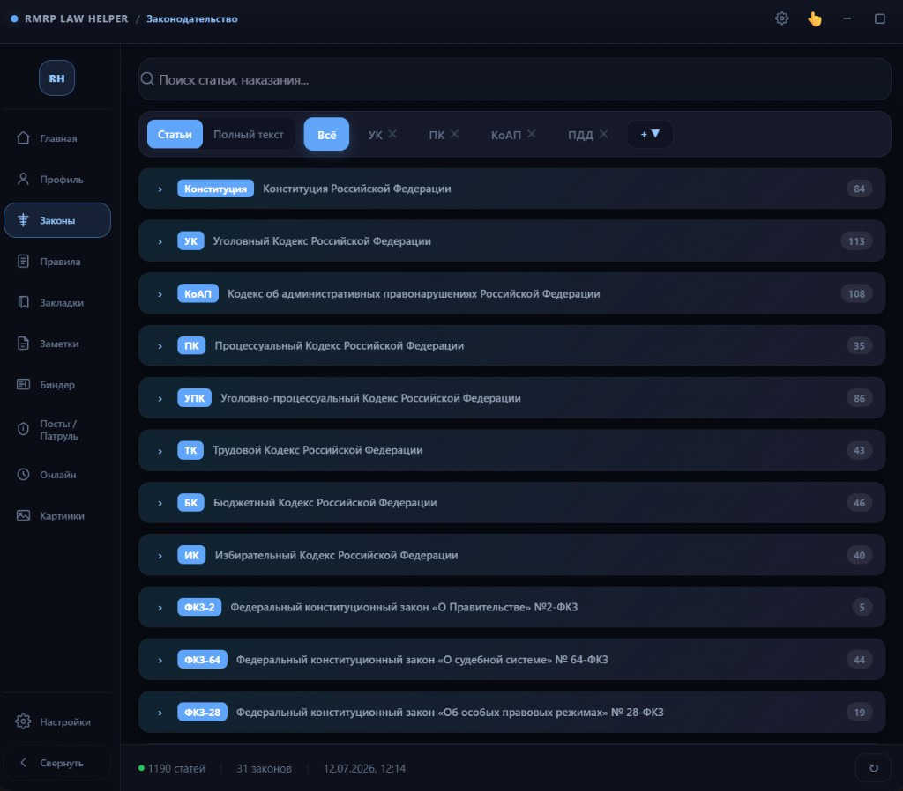

Законодательство
Все законы с форума
Актуальное законодательство RMRP с официального форума: УК, КоАП, УПК, Конституция, трудовой и другие кодексы. Данные кэшируются локально и обновляются с форума — можно работать офлайн после первой загрузки.
- Fuzzy-поиск: «ст 105», «УПК 186», текст, наказание
- Вкладки документов — закрепите нужные кодексы
- Режим «Полный текст» с подсветкой совпадений
- Карточки статей с наказаниями и картинками
- Перекрёстные ссылки между статьями
- Закладки, отдельное окно, заметка к статье
